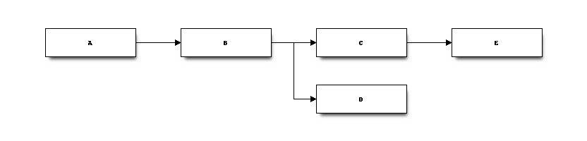

module onnxrt.onnx_inference#
Short summary#
module mlprodict.onnxrt.onnx_inference
Implements a class able to compute the predictions from on an ONNX model.
Classes#
class |
truncated documentation |
|---|---|
Loads an ONNX file or object or stream. Computes the output of the ONNX graph. Several runtimes … |
Properties#
property |
truncated documentation |
|---|---|
Returns the names of all inputs. It does not include the optional inputs. |
|
Returns the names and shapes of all inputs. This method assumes all inputs are tensors. It does not include … |
|
Returns the names, shapes, types of all inputs. This method assumes all inputs are tensors. It does not … |
|
Returns the names of all outputs. |
|
Returns the names and shapes of all outputs. This method assumes all inputs are tensors. |
|
Returns the names, shapes, types of all outputs. This method assumes all inputs are tensors. It does not … |
Static Methods#
staticmethod |
truncated documentation |
|---|---|
Methods#
method |
truncated documentation |
|---|---|
Returns the ONNX verions of a node. |
|
To pickle the object. |
|
usual |
|
To unpickle the object. |
|
usual |
|
Rewrite the run function in python, compiles it, and adds it as a method. |
|
Looks into every node of the graph to see if there is a way to do the computation inplace. By default (input_inplace=False), … |
|
Prepares the instance to deliver predictions. |
|
Executes a compiled version of |
|
Set shapes based on shape inference relying on the runtime. The values are stored in every node. |
|
Set sizes allocated during inference relying on the runtime. The values are stored in every node. |
|
Set types based on type inference relying on the runtime. The values are stored in every node. |
|
Builds every possible ONNX file which computes one specific intermediate output from the inputs. … |
|
Checks the model follow ONNX conventions. |
|
Shows the sequence of nodes to run if |
|
This function returns a dictionary {(kind, name): (order, op)}, name can be a node name or a result name. In … |
|
Returns the profiling after a couple of execution. |
|
Maps every name to one integer to avoid using dictionaries when running the predictions. |
|
Computes expected shapes. |
|
Computes expected sizes. |
|
Computes expected shapes. |
|
Reduces the memory footprint as much as possible. |
|
Computes the predictions for this onnx graph. |
|
Executes the graphs with the given inputs, then adds the intermediate results into ONNX nodes in the original graph. … |
|
Infers the shape of the outputs with onnx package. |
|
Switches all initializers to |
|
Produces a graph to facilitate the execution. One example: |
Documentation#
Implements a class able to compute the predictions from on an ONNX model.
- class mlprodict.onnxrt.onnx_inference.OnnxInference(onnx_or_bytes_or_stream, runtime=None, skip_run=False, inplace=True, input_inplace=False, ir_version=None, target_opset=None, runtime_options=None, session_options=None, inside_loop=False, static_inputs=None, new_outputs=None, new_opset=None, existing_functions=None)#
Bases:
objectLoads an ONNX file or object or stream. Computes the output of the ONNX graph. Several runtimes are available.
'python': the runtime implements every onnx operator needed to run a scikit-learn model by using numpy or C++ code.'python_compiled': it is the same runtime than the previous one except every operator is called from a compiled function (_build_compile_run) instead for a method going through the list of operator'onnxruntime1': uses onnxruntime (or onnxruntime1-cuda, …)'onnxruntime2': this mode is mostly used to debug as python handles calling every operator but onnxruntime is called for every of them, this process may fail due to wrong inference type specially of the graph includes custom nodes, in that case, it is better to compute the output of intermediates nodes. It is much slower as fo every output, every node is computed but more robust.
- Parameters
onnx_or_bytes_or_stream – onnx object, bytes, or filename or stream
runtime – runtime options
skip_run – do not build the runtime
inplace – use inplace computation as much as possible
input_inplace – the computation is allowed to overwrite the input, see
_guess_inplaceir_version – if not None, overwrite the default version
target_opset – used to overwrite target_opset
runtime_options – specific options for the runtime
inside_loop – tells the runtime the graph is meant to be repeated multiple times (in that case, inputs and outputs may share the same name)
static_inputs – Loop can use static variables, variables from the graph which runs the loop (enumerate of strings)
new_outputs – if the loading fails, it might worth cutting the graph, if not None, the graph will be cut to have these new_outputs as the final outputs
new_opset – overwrite the main opset and replaces by this new one
existing_functions – a model may contain several local functions, this parameter is used when a local function is calling another local function previously defined.
Among the possible runtime_options, there are: * enable_profiling: enables profiling for onnxruntime * session_options: an instance of SessionOptions from
ir_version: change ir_version
Changed in version 0.7: Parameters new_outputs, new_opset were added.
Changed in version 0.8: Parameters static_inputs, device were added.
Changed in version 0.9: Parameters existing_functions was added. Removes device parameter. See runtime. Runtime onnxruntime1-cuda was added.
- __getitem__(item)#
Returns the ONNX verions of a node.
- __getstate__()#
To pickle the object.
- __init__(onnx_or_bytes_or_stream, runtime=None, skip_run=False, inplace=True, input_inplace=False, ir_version=None, target_opset=None, runtime_options=None, session_options=None, inside_loop=False, static_inputs=None, new_outputs=None, new_opset=None, existing_functions=None)#
- __repr__()#
usual
- __setstate__(state)#
To unpickle the object.
- __str__()#
usual
- _build_compile_run(debug=False)#
Rewrite the run function in python, compiles it, and adds it as a method.
- Parameters
debug – insert debugging code
- Returns
method name, callable object
Run a model with runtime ‘python_compiled’
The following code trains a model and compute the predictions with runtime
'python_compiled'. It converts the onnx graph into a python function which calls every operator. Its code is printed below.<<<
import numpy from sklearn.datasets import load_iris from sklearn.model_selection import train_test_split from sklearn.ensemble import AdaBoostClassifier from sklearn.tree import DecisionTreeClassifier from mlprodict.onnx_conv import to_onnx from mlprodict.onnxrt import OnnxInference iris = load_iris() X, y = iris.data, iris.target X_train, X_test, y_train, __ = train_test_split(X, y, random_state=11) y_train = y_train.astype(numpy.float32) clr = AdaBoostClassifier( base_estimator=DecisionTreeClassifier(max_depth=3), n_estimators=3) clr.fit(X_train, y_train) model_def = to_onnx(clr, X_train.astype(numpy.float32), target_opset=12) oinf2 = OnnxInference(model_def, runtime='python_compiled') print(oinf2.run({'X': X_test[:5]})) # prints out the python function equivalent # to the onnx graph print(oinf2)
>>>
{'output_label': array([2, 2, 1, 1, 2]), 'output_probability': []} OnnxInference(...) def compiled_run(dict_inputs, yield_ops=None): if yield_ops is not None: raise NotImplementedError('yields_ops should be None.') # init: classes (classes) # init: clip_min (clip_min) # init: inverted_n_classes (inverted_n_classes) # init: mul_operand (mul_operand) # init: n_classes_minus_one (n_classes_minus_one) # init: shape_tensor (shape_tensor) # init: shape_tensor3 (shape_tensor3) # init: zero_scalar (zero_scalar) # inputs X = dict_inputs['X'] (elab_name_0, eprob_name_0, ) = n0_treeensembleclassifier_1(X) (elab_name_1, eprob_name_1, ) = n1_treeensembleclassifier_1(X) (clipped_proba1, ) = n2_clip_11(eprob_name_1, clip_min) (clipped_proba, ) = n3_clip_11(eprob_name_0, clip_min) (log_proba1, ) = n4_log(clipped_proba1) (log_proba, ) = n5_log(clipped_proba) (reduced_proba1, ) = n6_reducesum_11(log_proba1) (reduced_proba, ) = n7_reducesum_11(log_proba) (reshaped_result, ) = n8_reshape_5(reduced_proba, shape_tensor) (reshaped_result1, ) = n9_reshape_5(reduced_proba1, shape_tensor) (prod_result1, ) = n10_mul(reshaped_result1, inverted_n_classes) (prod_result, ) = n11_mul(reshaped_result, inverted_n_classes) (sub_result, ) = n12_sub(log_proba, prod_result) (sub_result1, ) = n13_sub(log_proba1, prod_result1) (samme_proba, ) = n14_mul(sub_result, n_classes_minus_one) (samme_proba1, ) = n15_mul(sub_result1, n_classes_minus_one) (summation_prob, ) = n16_sum(samme_proba, samme_proba1) (div_result, ) = n17_div(summation_prob, n_classes_minus_one) (exp_operand, ) = n18_mul(div_result, mul_operand) (exp_result, ) = n19_exp(exp_operand) (reduced_exp_result, ) = n20_reducesum_11(exp_result) (normaliser, ) = n21_reshape_5(reduced_exp_result, shape_tensor) (cast_normaliser, ) = n22_cast(normaliser) (comparison_result, ) = n23_equal(cast_normaliser, zero_scalar) (cast_output, ) = n24_cast(comparison_result) (zero_filtered_normaliser, ) = n25_add(normaliser, cast_output) (probabilities, ) = n26_div(exp_result, zero_filtered_normaliser) (output_probability, ) = n27_zipmap(probabilities) (argmax_output, ) = n28_argmax_12(probabilities) (array_feature_extractor_result, ) = n29_arrayfeatureextractor(classes, argmax_output) (reshaped_result2, ) = n30_reshape_5(array_feature_extractor_result, shape_tensor3) (label, ) = n31_cast(reshaped_result2) (output_label, ) = n32_cast(label) return { 'output_label': output_label, 'output_probability': output_probability, }
- static _get_type_property(info, prop)#
- _guess_inplace(input_inplace=False)#
Looks into every node of the graph to see if there is a way to do the computation inplace. By default (input_inplace=False), the function assumes inputs cannot be modified so the first node cannot do inplace computation. This function only works with the python runtime.
- Parameters
input_inplace – the computation is allowed to overwrite the input
This function checks that one node is used only once and then can be modified by the next node. Nodes A, C can be overwritten by the computation. Node B cannot as it is used by two nodes.
It does not handle specific case such node B being overwritten by node C but without changing its shape and node D only needs the shape of B. Then B could be overwritten as well.
- _guess_input_dtype()#
- _init(existing_functions=None)#
Prepares the instance to deliver predictions.
- _run_sequence_runtime(inputs, clean_right_away=False, intermediate=False, verbose=0, node_time=False, overwrite_types=None, yield_ops=None, fLOG=None)#
- _run_sequence_runtime_compiled(inputs, clean_right_away=False, intermediate=False, verbose=0, node_time=False, yield_ops=None, fLOG=None)#
Executes a compiled version of
_run_sequence_runtime, compiled with method_build_compile_run. Every parameter with a default value is ignored. Switch toruntime='python'to enable those.
- _run_whole_runtime(inputs, clean_right_away=False, intermediate=False, verbose=0, node_time=False, overwrite_types=None, yield_ops=None, fLOG=None)#
- _set_shape_inference_runtime()#
Set shapes based on shape inference relying on the runtime. The values are stored in every node.
- _set_size_inference_runtime(inputs, context=None)#
Set sizes allocated during inference relying on the runtime. The values are stored in every node.
- _set_type_inference_runtime(inputs=None)#
Set types based on type inference relying on the runtime. The values are stored in every node.
- build_intermediate(outputs=None, verbose=0, overwrite_types=None, fLOG=None)#
Builds every possible ONNX file which computes one specific intermediate output from the inputs.
- Parameters
outputs – subsets of outputs to get, None to get all outputs,
overwrite_types – shape inference does not work all the time, this allows to force types when building intermediate results, see
select_model_inputs_outputsverbose – displays intermediate information
fLOG – logging function
- Returns
- display_sequence(verbose=1)#
Shows the sequence of nodes to run if
runtime=='python'.
- get_execution_order()#
This function returns a dictionary {(kind, name): (order, op)}, name can be a node name or a result name. In that case, it gets the execution order than the node which created it. The function returns None if the order is not available (the selected runtime does not return it). kind is either ‘node’ or ‘node’. If two nodes have the same name, returned order is the last one. Initializers gets an execution order equal to -1, inputs to 0, all others results are >= 1.
New in version 0.7.
- get_profiling(as_df=False)#
Returns the profiling after a couple of execution.
- Parameters
as_df – return the results as a dataframe (True)
- Returns
dataframe or list of dictionaries
New in version 0.6.
- global_index(name)#
Maps every name to one integer to avoid using dictionaries when running the predictions.
- Parameters
name – outputs name
- Returns
integer
- infer_shapes()#
Computes expected shapes.
- Returns
dictionary of shapes
- infer_sizes(inputs, context=None)#
Computes expected sizes.
- Parameters
inputs – inputs as a dictionary
- Returns
dictionary of dictionary of sizes
- infer_types(inputs=None)#
Computes expected shapes.
- Parameters
inputs – needed when this class host a function and not a graph
- Returns
dictionary of types
- property input_names#
Returns the names of all inputs. It does not include the optional inputs.
Changed in version 0.6: The list does not include optional inputs anymore.
- property input_names_shapes#
Returns the names and shapes of all inputs. This method assumes all inputs are tensors. It does not include the optional inputs.
Changed in version 0.6: The list does not include optional inputs anymore.
- property input_names_shapes_types#
Returns the names, shapes, types of all inputs. This method assumes all inputs are tensors. It does not include the optional inputs.
Changed in version 0.6: The list does not include optional inputs anymore.
- property output_names#
Returns the names of all outputs.
- property output_names_shapes#
Returns the names and shapes of all outputs. This method assumes all inputs are tensors.
- property output_names_shapes_types#
Returns the names, shapes, types of all outputs. This method assumes all inputs are tensors. It does not include the optional outputs.
- reduce_size(pickable=False)#
Reduces the memory footprint as much as possible.
- Parameters
pickable – keeps a pickle object?
- run(inputs, clean_right_away=False, intermediate=False, verbose=0, node_time=False, overwrite_types=None, yield_ops=None, fLOG=None)#
Computes the predictions for this onnx graph.
- Parameters
inputs – inputs as dictionary or a dataframe
clean_right_away – clean the intermediate outputs as soon as they are not needed
intermediate – returns a dictionary of intermediate variables instead of the results only
verbose – display information while predicting
node_time – measure time of each node
overwrite_types – shape inference does not work all the time, this allows to force types when building intermediate results, see
select_model_inputs_outputsyield_ops – dictionary to overwrite the output of operator YieldOp
fLOG – logging function if verbose > 0
- Returns
outputs as dictionary and a second dictionary of the time spent in each node if node_time is True
Computes predictions with any runtime
The following example compares predictions between scikit-learn and this runtime for the python runtime.
<<<
import numpy from sklearn.linear_model import LinearRegression from sklearn.datasets import load_iris from sklearn.model_selection import train_test_split from mlprodict.onnxrt import OnnxInference from mlprodict.onnx_conv import to_onnx iris = load_iris() X, y = iris.data, iris.target X_train, X_test, y_train, _ = train_test_split(X, y) clr = LinearRegression() clr.fit(X_train, y_train) exp = clr.predict(X_test[:5]) print(exp) model_def = to_onnx(clr, X_train.astype(numpy.float32), target_opset=12) oinf = OnnxInference(model_def) y = oinf.run({'X': X_test[:5]}) print(y)
>>>
[ 1.197 1.451 -0.042 1.362 1.603] {'variable': array([[ 1.197], [ 1.451], [-0.042], [ 1.362], [ 1.603]])}
The function returns all intermediate outputs if intermediate is True. In case of runtime onnxruntime1, if intermediate is True, the first class builds all ONNX cut out to keep the one output and converted into OnnxInference.
Changed in version 0.8: Parameter yield_ops was added.
- run2onnx(inputs, verbose=0, fLOG=None, as_parameter=True, suffix='_DBG', param_name=None, node_type='DEBUG', domain='DEBUG', domain_opset=1)#
Executes the graphs with the given inputs, then adds the intermediate results into ONNX nodes in the original graph. Once saved, it can be looked with a tool such as netron.
- Parameters
inputs – inputs as dictionary or a dataframe
verbose – display information while predicting
fLOG – logging function if verbose > 0
as_parameter – add new nodes with results as one parameter (True) or as initializer (False)
suffix – suffix to add to new results
param_name – name of the parameter to add (by default the result name), it can be a function param_name(reult_name) -> parameter_name
node_type – type of the new node
domain – domain the new node
domain_opset – opset for domain
- Returns
outputs as dictionary and the onnx graph with new nodes
The following example shows how to use it.
New in version 0.7.
- shape_inference()#
Infers the shape of the outputs with onnx package.
- Returns
A new ONNX graph which defined outputs.
- switch_initializers_dtype(model=None, dtype_in=<class 'numpy.float32'>, dtype_out=<class 'numpy.float64'>)#
Switches all initializers to
numpy.float64. If model is None, a simple cast is done. Otherwise, the function assumes the model is a scikit-learn pipeline. This only works if the runtime is'python'.- Parameters
model – scikit-learn model or None
dtype_in – previous type
dtype_out – next type
- Returns
done operations
- to_sequence(existing_functions=None)#
Produces a graph to facilitate the execution.
One example:
Convert ONNX into graph
An example on how to convert an ONNX graph into a graph.
<<<
import pprint import numpy from mlprodict.npy.xop import loadop from mlprodict.onnxrt import OnnxInference OnnxAiOnnxMlLinearRegressor = loadop( ('ai.onnx.ml', 'LinearRegressor')) pars = dict(coefficients=numpy.array([1., 2.]), intercepts=numpy.array([1.]), post_transform='NONE') onx = OnnxAiOnnxMlLinearRegressor( 'X', output_names=['Y'], **pars) model_def = onx.to_onnx( {'X': pars['coefficients'].astype(numpy.float32)}, outputs={'Y': numpy.float32}, target_opset=12) oinf = OnnxInference(model_def) pprint.pprint(oinf.to_sequence())
>>>
{'functions': {}, 'inits': {}, 'inputs': {'X': {'name': 'X', 'type': {'elem': 'float', 'kind': 'tensor', 'shape': (2,)}}}, 'intermediate': {'Y': None}, 'ir_version': 3, 'nodes': {'_linearregressor': Onnx-LinearRegressor(X) -> Y (name='_linearregressor')}, 'outputs': {'Y': {'name': 'Y', 'type': {'elem': 'float', 'kind': 'tensor', 'shape': ('?',)}}}, 'sequence': [Onnx-LinearRegressor(X) -> Y (name='_linearregressor')], 'statics': {}, 'targets': {'': 1}}
See an example of representation in notebook ONNX visualization.
- mlprodict.onnxrt.onnx_inference.iskeyword()#
x.__contains__(y) <==> y in x.